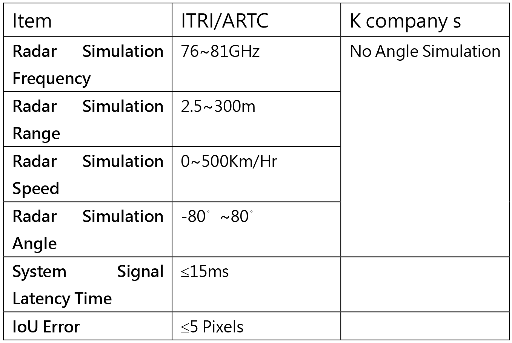

| 全球首創車載智慧顯示虛實融合互動系統驗證平台 The First Verification Platform of Smart Display In-vehicle information Fusion System in the World |
| 因應未來智慧移動發展趨勢，工研院結合車輛測試中心共同開 發全球首創整合透明顯示器、六軸運動平台及雷達目標模擬系 統之硬體在環(Hardware in Loop，HIL)模擬驗證平台，可於乘 車模擬系統中進行窗外景物的框選疊合率(Intersection over Union，IoU)驗證，縮短虛實融合系統驗證及開發時程。 In response to the future trend of smart mobility, Industrial Technology Research Institute (ITRI) and Automotive Research & Testing Center (ARTC) jointly developed the HIL (Hardware in Loop) simulation verification platform. It has integrated with transparent display, Stewart platform and radar target simulator system. This platform can process Intersection over Union (IoU) verification for various scenes outside by road simulation system, and shorten the verification and development schedule of the information fusion system.  |
| 技術洽詢聯絡人：施淳耀 聯絡電話：04-7811222 #2352 E-mail：cyshih@artc.org.tw |